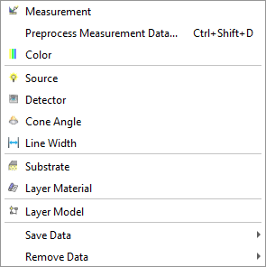
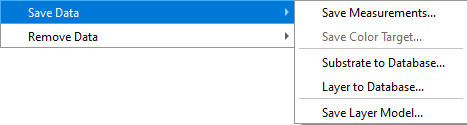
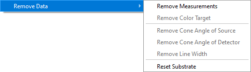

Data Menu
The Data menu is designed to provide access to various database files and to facilitate operations for organizing data in computer memory.
Most of the Data menu commands open corresponding database access windows. These include:
Measurements Data
Color Target
Light Source
Detector
Cone Angle
Line Width
Substrate
Layer Material
Layer Model
These commands are also accessible from the OptiChar Toolbar.

Measurements Data: Opens a database containing experimental data on reflectance and transmittance at various wavelengths, polarizations, incidence angles, and ellipsometric data. This command is accessible via the OptiChar Toolbar.
Preprocess Measurement Data: Allows preprocessing of measurement data to reduce the number of data points if the data grid is too dense. It is also feasible to normalize measurement data when referencing measurements to the uncoated substrate. Normalization is conducted relative to the currently loaded substrate. This process involves multiplying the measurement data by the Fresnel transmission/reflection coefficient of the uncoated substrate. For transmittance data, both sides of the substrate are considered. For reflectance data, the influence of the substrate’s back side is determined by the current configuration of the “Reflectance without Back Side” option within the Options section of the Characterization submenu.
Color Target: Opens a database containing Color Target files, accessible through the OptiChar Toolbar.
Light Source: Opens a database containing Light Source files, accessible via the OptiChar Toolbar.
Detector: Opens a database for Detector files, accessible from the OptiChar Toolbar.
Cone Angle: Opens a database containing Cone Angle files, accessible from the OptiChar Toolbar.
Line Width: Opens a database for Line Width files, accessible via the OptiChar Toolbar.
Substrate: Opens a database with files on refractive indices and extinction coefficients for various substrate materials, accessible through the OptiChar Toolbar.
Layer: Opens a database with refractive indices and extinction coefficients for various layer materials, accessible via the OptiChar Toolbar.
Layer Model: Opens a database of files with layer models, which include thickness, refractive index, extinction coefficient wavelength dependence, and inhomogeneities. Use the Save Layer Model command to store models for future use or modification. Models can be edited with the Layer Model Editor.
Save Data: Provides options to save different objects to corresponding databases. The save process prompts for a file name and is detailed in the Saving Current Measurements documentation.
Save Measurement Data: Allows the user to save a measurement data set that has been modified using the Modify Measurements option in the Characterization submenu. You will be prompted to enter the output file name in the dialog for saving Measurements, Substrate, or Layer data. Please note that Substrate and Layer data are saved in a format fully compatible with OptiLayer and can be directly used by OptiLayer later.
Substrate to Database: Saves substrate characterization results to the substrate materials database.
Layer to Database: Saves layer characterization results to the layer materials database. Only refractive index and extinction coefficient wavelength dependencies are stored, with wavelength region and spectral points customizable during saving.
Save Layer Model: Saves layer characterization results to the layer models database, which includes all layer model parameters like thickness and refractive index wavelength dependence.
Remove Data: This feature opens a submenu that allows the user to remove the current object from memory. This action helps to clear unnecessary data and manage memory effectively.
 Note: Files in the Layer database have the same binary
format as the layer material files in OptiLayer and
OptiRE. This means that results obtained by OptiChar can
be directly used in OptiLayer or OptiRE.
Note: Files in the Layer database have the same binary
format as the layer material files in OptiLayer and
OptiRE. This means that results obtained by OptiChar can
be directly used in OptiLayer or OptiRE.